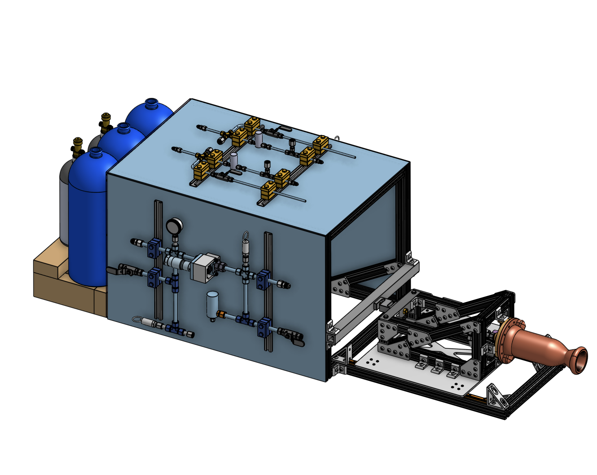
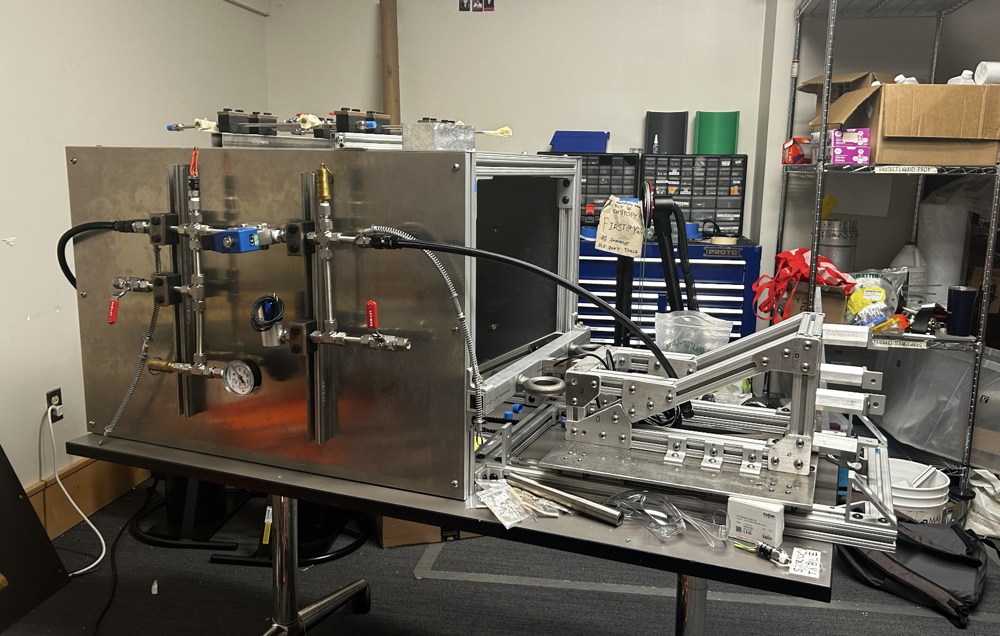
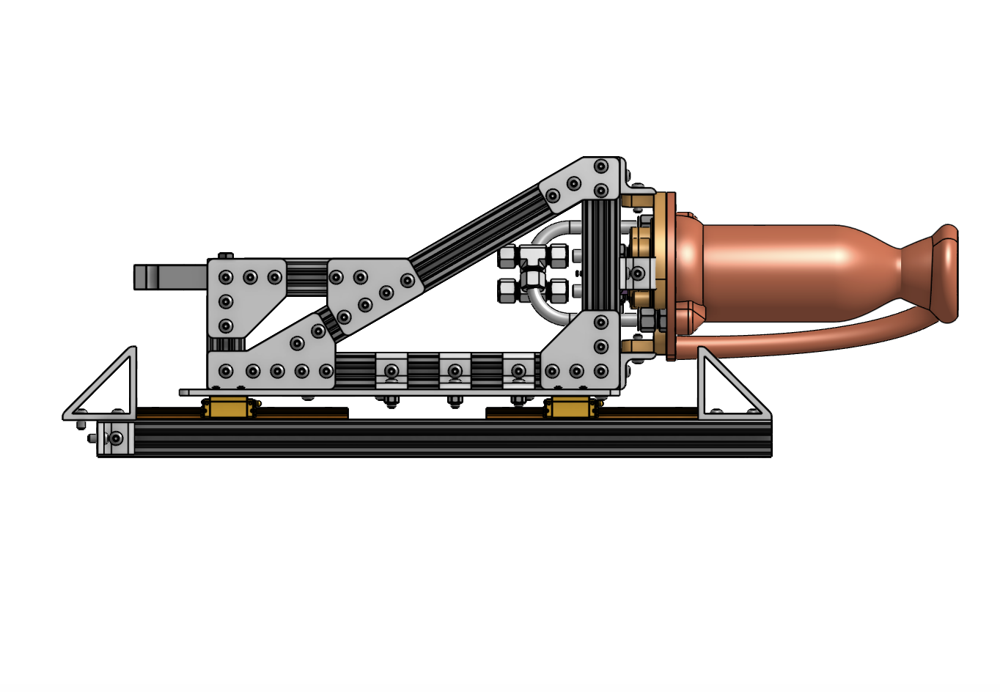
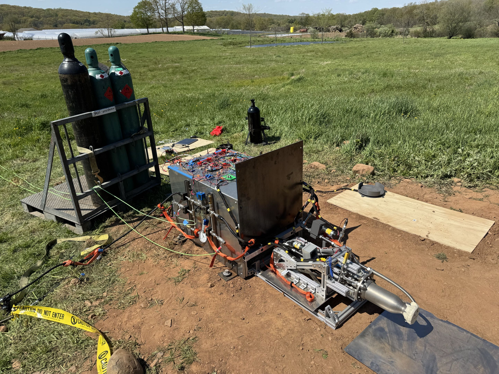

Tank Mounting
Resist 200 lbf with a factor of safety of 2 while maintaining a physical barrier between fuel and oxidizer sources.
Project Liquid
Structures and test-infrastructure work for a regeneratively cooled liquid bipropellant engine using ethane and nitrous oxide.

Overview
The engine program targeted a student-scale liquid rocket engine with single-pass regenerative cooling. My page focuses on the structures and test hardware I led: the tank mounting requirements, GSE cart layout, and engine test carriage.
Media
The image set follows the same progression as the pulsejet page: CAD context, subsystem detail, and built hardware. Use the buttons to switch between views.



Fall 2024
I created design targets, led design reviews, approved design submissions, and wrote change orders for major test-system structures.
Subassemblies
Resist 200 lbf with a factor of safety of 2 while maintaining a physical barrier between fuel and oxidizer sources.
Support accessible fluid and electronics integration, shrapnel-resistant fuel tank shielding, modularity, and mobility.
Resist 5,000 lbf with a factor of safety of 5 while measuring thrust load and minimizing friction losses in the thrust path.
Responsible Engineer
I owned the test carriage design. The frame used 8020 aluminum extrusion and was designed for horizontal engine testing with flexibility for future vertical configurations.
Validation
Validation was split by subsystem. The test carriage was checked structurally in ANSYS FEA, while the fluids system was validated through pressure testing before engine test operations.
Technical Work